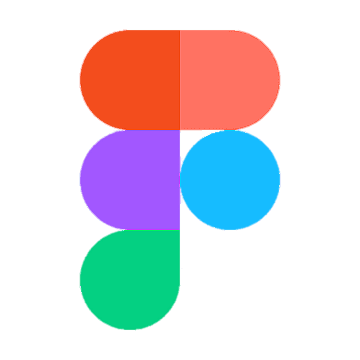
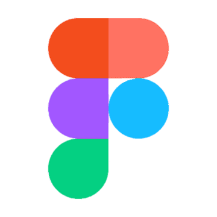

Разработка дизайнов мобильных приложений и сайтов.
Подготовка интерфейсов для продуктов, связанных с виртуальной реальностью.
Прорисовка мультфильмов по кадрово.
Создание анимационных презентаций на любую тему.
Быстрый и простой способ считать и строить таблицы.
Работа с текстом.
Написание программ по программированию и WEB-технологиям.
О себе...
Мои достяжения основываются лишь на диком интересе к спорту, рисованию и движению в жизнию
Пока другие мои одноклассники в школе играли в компьютерные игры, я ездила по другим городаи и получала какой-то опыт и получала за проведенные игры медали и кубки.
Сейчас же будучи в Университете, я продолжаю вести активный образ жизни, учавствуя от Волотерского центра в различным университетских мероприятия, городских и поездками в другие города.

 
